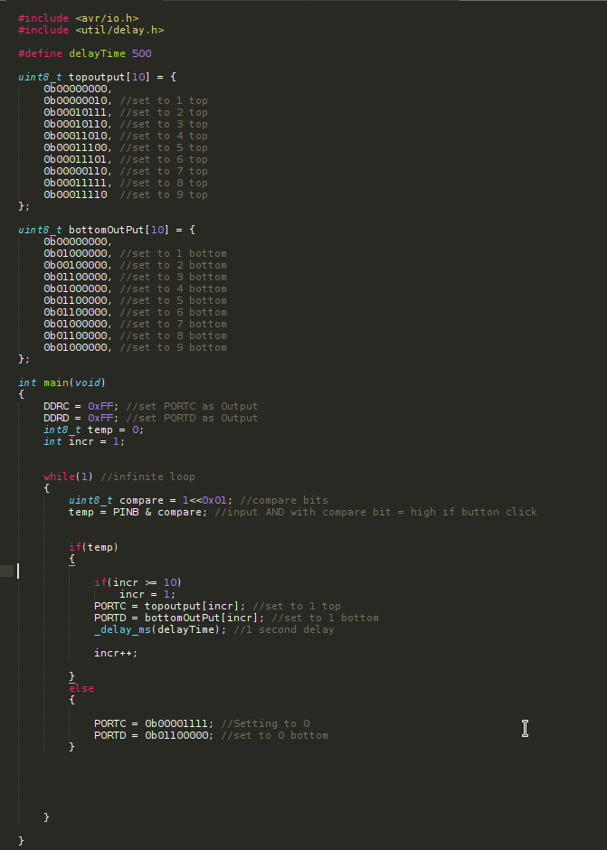

This project is my starting point in understanding Embedded software engineering. For this project I worked with the AVR micro-controller ATmega128p. I used the Pocket AVR Programmer along with AVRdude to upload the program to the microcontroller. The goal of this project was write numbers 0 through 9 to the 7-Segment display. Incrementing through them with a Button sensor
Program uploaded:
